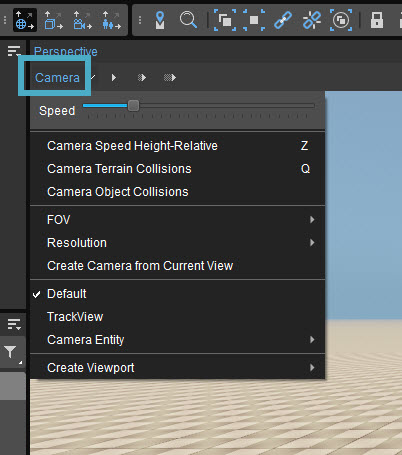

Overview
The Perspective Viewport is the only Viewport that is adjustable. On this page, we'll discuss the Camera Settings.
Camera Settings for the Perspective Viewport
You can find the Camera settings for the Perspective Viewport in the top-left corner of the Viewport window:

Setting | Description |
|---|---|
| Speed | Changes the speed within that Viewport. (Can also be changed by scrolling the mouse wheel while moving around in the Viewport, see also Viewport Navigation.) |
| Camera Speed Height-relative | When enabled, adjusts the speed of camera movement based on the height of the camera above terrain or objects. The camera speed is multiplied by the height in meters (clamped to a range of 1-1000). This lets you move precisely when close to the ground, or quickly to different parts of the level, without constantly adjusting the camera speed slider. |
| Camera Terrain Collisions | Toggles terrain collision on and off. When turned on, the camera does not go through the terrain when hitting it, but will always move along it. This option also affects Speed Height-Relative: when on, camera height is measured above terrain or objects; when off, terrain only. |
| Camera Object Collisions | Toggles object collision on and off. When turned on, the camera does not go through objects on the terrain when hitting them, but will always move along them. |
| FOV | Sets the Field of View. |
| Resolution | Sets the resolution for this Viewport.
|
| Create Camera from Current View | Creates a camera from the current view. |
| Default | Sets the view to the default camera. |
| Trackview | Sets the view to the Trackview Camera. |
| Camera Entity | Lets you jump between different cameras you have created with Create Camera from Current View. |
| Create Viewport | Opens another Viewport of your choice in a new window. (This can also be done by going to Tools -> Viewport and choosing the Viewport you want to open.) |